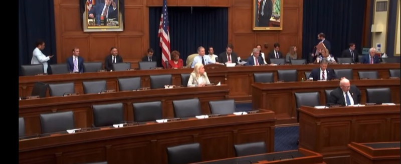
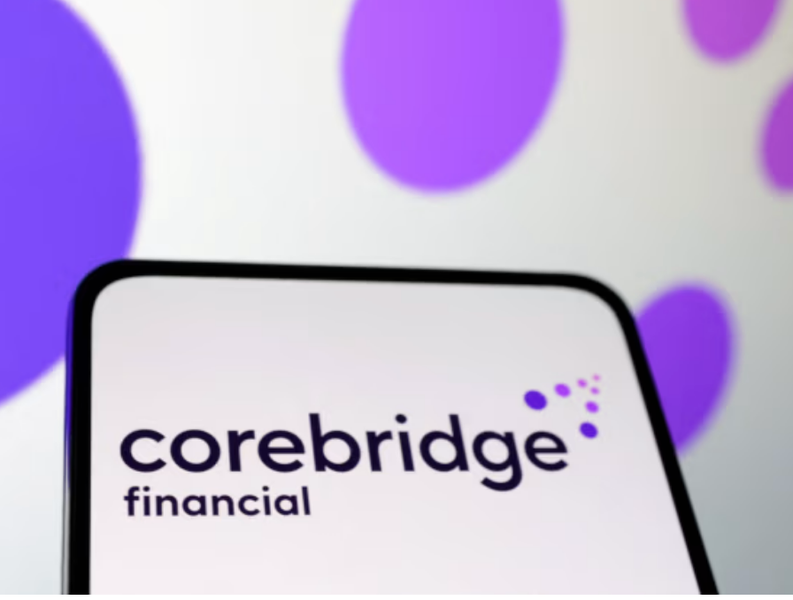

Historia 1: Liquidación de PHL Variable Insurance se pospone a 2027 mientras inicia el proceso RFP de NOLHGA
PHL Variable Insurance Co., la aseguradora de vida con sede en Connecticut que fue colocada en rehabilitación en mayo de 2024 tras el descubrimiento de un enorme déficit de capital, no será liquidada hasta al menos 2027, confirmaron los reguladores estatales esta semana. El anuncio marca una extensión significativa respecto a proyecciones anteriores que anticipaban una orden de liquidación para finales de 2026, y subraya la extraordinaria complejidad de desmantelar una gran aseguradora de vida mientras se protege a cientos de miles de titulares de pólizas.
El deterioro financiero de la compañía ha sido severo y acelerado. Cuando el comisionado de seguros de Connecticut colocó por primera vez a PHL Variable en rehabilitación hace dos años, el déficit de capital rondaba los 900 millones de dólares. Al cierre de 2025, ese déficit se había disparado a 2.200 millones de dólares, reflejando los desafíos compuestos de gestionar un bloque de negocio en dificultades en un entorno de tasas de interés volátiles. Las subsidiarias cautivas de la compañía, Concord Re, Inc. y Palisado Re, Inc., también forman parte de los procedimientos de administración judicial.
La National Organization of Life and Health Insurance Guaranty Associations (NOLHGA) está ahora en el centro del plan de transición. NOLHGA gestiona un proceso formal de solicitud de propuestas (RFP) que se espera lanzar en el T3 de 2026, solicitando ofertas de aseguradoras solventes dispuestas a asumir las obligaciones garantizadas de las pólizas de PHL. El objetivo es asegurar una transacción que ofrezca a los titulares beneficios que superen los topes estándar de las asociaciones de garantía.
Los topes de cobertura estándar de las asociaciones de garantía — típicamente 300.000 dólares en beneficios por fallecimiento y 250.000 dólares en valor de rescate en efectivo por titular, aunque los límites varían según el estado — pueden no ser suficientes para indemnizar plenamente a todos los titulares de PHL. Al usar los activos restantes del patrimonio para financiar una transacción por encima de esos topes, los reguladores esperan reducir el daño financiero a las personas y familias afectadas.
Al 23 de junio de 2026, aproximadamente el 40% de los titulares elegibles habían presentado sus elecciones bajo un proceso de modificación aprobado por el tribunal. El procesamiento para titulares de anualidades indexadas fijas había alcanzado aproximadamente el 80% de finalización, mientras que el procesamiento de vida universal estaba en aproximadamente el 60%. Permanece vigente una moratoria sobre ciertos pagos de beneficios y transacciones.
La extensión del calendario tiene implicaciones significativas para los aproximadamente 40.000 a 50.000 titulares estimados que aún están en rehabilitación. Muchos de estos individuos son personas mayores que adquirieron anualidades variables o pólizas de vida universal como parte de sus estrategias de jubilación y planificación patrimonial. Algunos informes señalan posibles pérdidas que superan los 120 millones de dólares para ciertos grupos.
Para la industria aseguradora en general, el caso de PHL Variable es una advertencia sobre los riesgos de estructuras de reaseguro offshore y exposición a crédito privado. Los reguladores han señalado que la dificultad financiera de la compañía se debió en parte a arreglos de reaseguro complejos que ocultaron el verdadero perfil de riesgo de su balance, lo que ha impulsado un escrutinio intensificado a través de la Actuarial Guideline 55 (AG 55).
El caso también destaca el papel crítico de las asociaciones estatales de garantía en el marco regulatorio asegurador estadounidense. A diferencia de los depósitos bancarios, que están asegurados federalmente por la FDIC hasta 250.000 dólares, las pólizas de seguro de vida están protegidas por un entramado de fondos de garantía a nivel estatal. La adecuación de estas protecciones está ahora bajo renovado escrutinio de legisladores y defensores del consumidor.
Desde una perspectiva de mercado, la situación de PHL Variable ha reforzado la demanda de aseguradoras financieramente sólidas y altamente calificadas. Agentes y corredores independientes han reportado un aumento de consultas de clientes sobre calificaciones de solidez financiera de aseguradoras de AM Best, Moody's y S&P Global, particularmente en los mercados de gastos finales y seguro de vida para personas mayores.
Se espera que el proceso RFP de NOLHGA atraiga el interés de varios grandes grupos de seguros de vida con la capacidad financiera para absorber un bloque de negocio de este tamaño. Sin embargo, la complejidad de la mezcla de productos de PHL — anualidades variables, anualidades indexadas fijas y pólizas de vida universal — puede limitar el grupo de oferentes calificados. Los reguladores priorizarán las ofertas que ofrezcan el mayor nivel de protección al titular.
★ Qué significa para los agentes
- La solidez financiera de la aseguradora importa: al recomendar productos de seguro de vida o anualidades a clientes mayores y de gastos finales, hable proactivamente de las calificaciones AM Best, niveles de excedentes y protecciones de las asociaciones estatales de garantía.
- Los titulares de PHL necesitan orientación: los clientes con pólizas de PHL Variable deben contactar la oficina de administración judicial del Departamento de Seguros de Connecticut para obtener la información más reciente sobre el estado de su póliza específica.
- El reemplazo requiere cuidado: esté preparado para ayudar a clientes afectados a explorar opciones de cobertura de reemplazo, evaluando cuidadosamente la idoneidad y posibles cargos por rescisión.
- Un caso de advertencia para la industria: la situación de PHL refuerza por qué los clientes preguntan cada vez más sobre calificaciones de solidez financiera de AM Best, Moody's y S&P Global.
Historia 2: Comité de la Cámara avanza por unanimidad la Clarity for Compensation Act para asesores financieros

En una rara muestra de unidad bipartidista, el Comité de Servicios Financieros de la Cámara de Representantes votó 51-0 el 30 de junio de 2026 para avanzar la Clarity for Compensation Act (H.R. 7187), un proyecto de ley que modernizaría fundamentalmente cómo los asesores financieros independientes y los profesionales del seguro pueden recibir compensación. El voto unánime señala un fuerte apoyo del Congreso para eliminar una barrera regulatoria de larga data que ha complicado las operaciones comerciales de miles de agentes independientes y representantes registrados en todo el país.
El problema central que aborda la legislación es engañosamente simple: bajo las regulaciones de valores actuales, los representantes registrados — incluidos muchos asesores con doble licencia de seguros e inversiones — deben recibir pagos de comisiones directamente como individuos y no a través de sus propias entidades comerciales. Esta restricción crea ineficiencias operativas y fiscales significativas que no se aplican a otros profesionales licenciados como abogados, contadores o agentes exclusivos de seguros.
La Clarity for Compensation Act cambiaría esto al permitir explícitamente que los representantes registrados reciban compensación a través de entidades comerciales de servicios personales — como corporaciones S o LLC — que posean y controlen. Para asesores independientes que operan como pequeños empresarios, la capacidad de recibir ingresos a través de una entidad comercial permite una planificación fiscal más eficiente, facilita la compra de beneficios relacionados con el negocio y crea una estructura más limpia para la planificación de sucesión y la valoración del negocio.
El presidente de NAIFA, Christopher Gandy, enfatizó que el proyecto reconoce la realidad de cómo operan realmente los asesores independientes: como empresarios que dirigen pequeños negocios, no como empleados de las firmas cuyos productos distribuyen. El Financial Services Institute (FSI), Finseca y la Association of African American Financial Advisors (Quad-A) también han expresado un fuerte respaldo, señalando que la medida reduciría ineficiencias operativas y apoyaría la planificación de sucesión para asesores independientes.
El proyecto ahora espera programación para una votación en el pleno de la Cámara de Representantes. Si aprueba la Cámara, pasaría al Senado, donde necesitaría superar el Comité de Banca, Vivienda y Asuntos Urbanos antes de llegar a una votación en el pleno. Aunque el voto unánime en comité es una señal alentadora, el calendario legislativo en la segunda mitad de 2026 está congestionado y no hay garantía de que el proyecto llegue al escritorio del presidente antes del fin del Congreso actual.
Para el canal de distribución de seguros de vida específicamente, la Clarity for Compensation Act aborda una inequidad estructural que ha existido durante décadas. Los agentes exclusivos de seguros siempre han podido recibir comisiones a través de sus entidades comerciales — una flexibilidad que ha apoyado el crecimiento de organizaciones de marketing independientes (IMO) y organizaciones de marketing de campo (FMO). Los asesores con doble licencia que también tienen registros de valores han quedado atrapados en una brecha regulatoria que la nueva legislación cerraría.
El momento del avance del proyecto es significativo. La industria del seguro de vida está en medio de una gran transformación de distribución, con consolidación de corredores acelerándose y asesores independientes enfrentando presión creciente tanto de plataformas digitales directas al consumidor como de grandes sistemas de agencias cautivas. Legislación que reduzca la carga operativa sobre asesores independientes y facilite construir y transferir una cartera de clientes podría ayudar a sostener el canal de distribución independiente que representa la mayoría de las ventas de seguros de vida.
★ Qué significa para los agentes
- Consulte cumplimiento y asesores fiscales: si la Clarity for Compensation Act se convierte en ley, los agentes con doble licencia deben entender cómo las nuevas reglas se aplican a su estructura comercial específica.
- Posibles ventajas fiscales: recibir comisiones a través de una LLC o corporación S podría ofrecer beneficios fiscales significativos, particularmente para agentes de alto rendimiento en tramos de ingresos superiores.
- Impacto en planificación de sucesión: los agentes que planean vender su práctica o incorporar un socio junior deben explorar cómo la nueva estructura de compensación podría afectar la valoración del negocio y la planificación de transición.
- Manténgase informado con grupos del sector: siga actualizaciones de NAIFA y su broker-dealer mientras el proyecto avanza en el proceso legislativo.
Historia 3: Medicamentos GLP-1 reconfiguran la suscripción de seguros de vida: aseguradoras reincorporan peso para combatir deslizamiento de mortalidad
El crecimiento explosivo de los medicamentos agonistas del receptor GLP-1 — incluidos Ozempic (semaglutida), Wegovy y Zepbound — ha creado un desafío nuevo y complejo para los suscriptores de seguros de vida: cómo evaluar con precisión el riesgo de mortalidad de solicitantes cuyas métricas de salud han sido alteradas dramáticamente por medicamentos que quizá no sigan tomando. A mediados de 2026, las aseguradoras de toda la industria están actualizando activamente sus guías de suscripción, formularios de solicitud y modelos de evaluación de riesgo para tener en cuenta lo que los actuarios llaman el «efecto Ozempic».
El problema central es directo pero actuarialmente significativo. Los medicamentos GLP-1 pueden producir mejoras dramáticas en las métricas de salud en un periodo relativamente corto — reduciendo el peso corporal entre un 15% y un 20%, bajando la presión arterial, mejorando los niveles de HbA1c y reduciendo marcadores de riesgo cardiovascular. Un solicitante que ha estado en un GLP-1 durante seis meses puede presentar un perfil de salud sustancialmente mejor que su perfil de riesgo subyacente a largo plazo, particularmente si discontinúa el medicamento.
Y la discontinuación es común. La investigación muestra consistentemente que la mayoría de los usuarios de GLP-1 dejan de tomar el medicamento dentro de los 12 meses, a menudo por costo, efectos secundarios o cambios en la cobertura del seguro. Cuando los pacientes discontinúan la terapia GLP-1, la mayoría experimenta una recuperación significativa de peso — a menudo recuperando entre el 60% y el 70% del peso perdido en un año. Esto crea un «deslizamiento de mortalidad»: una situación en la que una aseguradora fija una prima basada en un perfil de salud temporalmente mejorado, solo para que el riesgo real del solicitante revierta a un nivel más alto después de la emisión de la póliza.
Para combatir esto, los suscriptores de seguros de vida están implementando ahora una serie de ajustes. El enfoque más común es reincorporar aproximadamente el 50% del peso perdido en los últimos 12 meses al calcular el IMC con fines de suscripción. Así, un solicitante que pesaba 250 libras, perdió 40 libras con un GLP-1 y ahora pesa 210 libras podría suscribirse con un IMC basado en un peso de 230 libras en lugar de 210 libras.
Los formularios de solicitud también se están actualizando. Hasta hace poco, la mayoría de las solicitudes de seguro de vida no preguntaban específicamente sobre el uso de medicamentos GLP-1. Eso está cambiando rápidamente. Las aseguradoras están agregando preguntas explícitas sobre el uso de medicamentos para pérdida de peso, duración del uso y dosis actual. No divulgar el uso de GLP-1 cuando se pregunta podría constituir tergiversación material, potencialmente anulando una póliza en el momento del siniestro.
Las verificaciones de bases de datos de prescripciones también se están volviendo más rigurosas. Las aseguradoras acceden rutinariamente a bases de datos de historial de prescripciones como parte del proceso de suscripción, y las prescripciones de GLP-1 ahora se marcan para revisión adicional. Algunas aseguradoras también exploran alianzas con administradores de beneficios farmacéuticos para monitorear la adherencia al medicamento de forma continua.
El programa Medicare GLP-1 Bridge, que se lanzó el 1 de julio de 2026, añade otra dimensión a este tema. El programa proporciona acceso a ciertos medicamentos GLP-1 para pérdida de peso a beneficiarios elegibles de Medicare Part D con un copago mensual de 50 dólares — una reducción significativa respecto a precios minoristas que pueden superar los 1.000 dólares al mes. Se espera que esto aumente sustancialmente el uso de GLP-1 entre la población mayor, que también es el mercado principal de gastos finales y seguros de vida para personas mayores.
Para agentes de gastos finales específicamente, el tema de suscripción con GLP-1 es particularmente relevante. Muchos clientes de gastos finales son personas mayores con múltiples condiciones de salud, y los medicamentos GLP-1 se prescriben cada vez más no solo para pérdida de peso sino para reducción de riesgo cardiovascular y manejo de diabetes. Un agente que no entienda cómo el uso de GLP-1 de un cliente afectará la suscripción puede colocar inadvertidamente a un cliente con una aseguradora cuyas guías resultarán en una póliza calificada o un rechazo.
La incertidumbre actuarial en torno a los GLP-1 se extiende más allá de la suscripción hacia la fijación de precios de productos. Las aseguradoras lidian con cómo incorporar datos de GLP-1 en sus tablas de mortalidad y modelos de precios. Si los medicamentos GLP-1 demuestran tener beneficios sostenidos de mortalidad a largo plazo, las aseguradoras demasiado conservadoras en su suscripción podrían encontrarse en desventaja competitiva. Los reguladores vigilan de cerca este espacio, con el Life Actuarial Task Force del NAIC iniciando discusiones sobre cómo deben tratarse los medicamentos GLP-1 en las suposiciones actuariales.
★ Qué significa para los agentes
- Pregunte sobre el uso de GLP-1 desde el inicio: antes de enviar una solicitud, pregunte directamente a los clientes si toman medicamentos para pérdida de peso o diabetes, incluidos Ozempic, Wegovy, Mounjaro o Zepbound.
- Compare entre aseguradoras: si un cliente está en un GLP-1, compare las guías de suscripción entre múltiples aseguradoras — la diferencia puede ser significativa entre tasas preferidas y subestándar.
- Documente las conversaciones cuidadosamente: asegúrese de que los clientes entiendan la importancia de la divulgación completa en sus solicitudes para evitar tergiversación material en el momento del siniestro.
- Impacto en el mercado de gastos finales: los medicamentos GLP-1 son ahora parte rutinaria de la conversación de suscripción para muchos clientes mayores y de gastos finales.
Historia 4: Corebridge Financial mejora Max Accumulator+ III IUL con estrategias Nasdaq-100 y S&P 500 High Bonus

Corebridge Financial, una de las mayores compañías de seguros de vida y servicios de jubilación en Estados Unidos, anunció el 29 de junio de 2026 mejoras significativas a su producto de seguro de vida universal indexado (IUL) Max Accumulator+ III. Las actualizaciones agregan dos nuevas estrategias de acreditación indexada — el Nasdaq-100 y el S&P 500 High Bonus — llevando el total de estrategias indexadas disponibles a cinco y expandiendo sustancialmente el potencial de acumulación de valor en efectivo del producto para titulares con horizontes temporales más largos y mayor tolerancia al riesgo.
El Max Accumulator+ III es un producto IUL enfocado en acumulación diseñado principalmente para clientes que desean protección permanente de seguro de vida combinada con la oportunidad de construir valor en efectivo con ventajas fiscales vinculado al rendimiento de índices de mercado. Como todos los productos IUL, ofrece un piso que protege el valor de la póliza de pérdidas de mercado — lo que significa que en años en que el índice vinculado rinde negativamente, la tasa de interés acreditada de la póliza no cae por debajo de cero.
La estrategia Nasdaq-100 recién agregada da a los titulares exposición al rendimiento del índice Nasdaq-100, centrado en tecnología, que rastrea 100 de las mayores empresas no financieras listadas en el Nasdaq Stock Market. Para clientes con un horizonte temporal largo — típicamente 15 a 20 años o más — la estrategia Nasdaq-100 ofrece el potencial de acumulación de valor en efectivo por encima del promedio, sujeto a las tasas de participación y topes del producto.
La estrategia S&P 500 High Bonus incorpora un mecanismo de bonificación que proporciona acreditación mejorada en ciertos escenarios de mercado. Este tipo de estrategia es particularmente atractiva en entornos donde los topes estándar del S&P 500 son relativamente bajos debido al costo de las opciones, ya que la característica de bonificación puede proporcionar upside adicional que compensa parcialmente las limitaciones de los topes.
El producto continúa ofreciendo sus estrategias indexadas existentes junto con las dos nuevas adiciones, dando a los titulares y sus asesores un menú de cinco opciones para asignar primas. Esta capacidad de diversificación permite a los clientes distribuir su exposición indexada entre diferentes segmentos de mercado y tipos de estrategia, potencialmente suavizando la volatilidad del rendimiento de cualquier índice individual a lo largo del tiempo.
El programa Agile Underwriting+ (AU+) de Corebridge permanece disponible para solicitantes elegibles, ofreciendo la posibilidad de aprobación de póliza sin examen médico, análisis de laboratorio ni declaración del médico tratante. El producto está disponible para edades de emisión de 0 a 80 años, con un monto mínimo de cobertura de 50.000 dólares. Los riders opcionales de beneficios en vida incluyen un rider de ingreso vitalicio garantizado, un rider de enfermedad crónica/gastos de cuidado y protección contra sobrepréstamo.
Las mejoras del producto llegan en un momento en que el IUL es uno de los segmentos de mejor rendimiento del mercado de seguros de vida. Según los datos del T1 2026 de LIMRA, la prima anualizada nueva de IUL alcanzó 1.100 millones de dólares en el primer trimestre, un aumento del 9% interanual, representando el 25% del mercado total de seguros de vida individual. El crecimiento está impulsado por compradores de ingresos medios y masivamente acomodados atraídos por la combinación de protección permanente, acumulación con ventajas fiscales y protección a la baja del IUL.
El contexto estratégico más amplio de Corebridge también merece atención. La compañía está en proceso de una fusión planificada con Equitable Holdings, que se espera concluya a finales de 2026. S&P Global ha asignado una perspectiva «negativa» a las calificaciones de Corebridge en relación con la fusión, reflejando riesgos de ejecución asociados con integrar dos grandes organizaciones de servicios financieros. Sin embargo, la compañía ha continuado invirtiendo en desarrollo de productos y expansión de distribución, incluida una alianza con Allstate Financial Services.
Para agentes independientes e IMOs, las mejoras del producto Corebridge representan una oportunidad para retomar conversaciones de IUL con clientes que quizá estaban indecisos sobre la categoría de producto. La adición de la estrategia Nasdaq-100 en particular puede atraer a clientes más jóvenes — aquellos en sus 30 y 40 — que se sienten cómodos con exposición al sector tecnológico y buscan un producto de seguro de vida que pueda servir como vehículo de acumulación de patrimonio a largo plazo junto con sus otras inversiones.
★ Qué significa para los agentes
- Narrativa IUL más sólida: las mejoras del Max Accumulator+ III dan a los agentes una historia más convincente en conversaciones de IUL, particularmente para clientes que buscan crecimiento del sector tecnológico o potencial de acumulación mejorado.
- Use ilustraciones oficiales: presente proyecciones realistas bajo múltiples escenarios — incluyendo tanto la tasa ilustrada actual como una tasa más conservadora sometida a prueba de estrés.
- Explique la mecánica de acreditación: asegúrese de que los clientes entiendan cómo funcionan los topes, tasas de participación y pisos, y cómo las nuevas estrategias Nasdaq-100 y S&P 500 High Bonus difieren de las estrategias estándar del S&P 500.
- Divulgación completa de costos: divulgue todos los costos del producto, incluidos cargos por costo del seguro y tarifas administrativas, para cumplimiento de idoneidad.
Mejor Vida Seguros
Al servicio de agentes independientes de vida y gastos finales en EE. UU.
Aviso: Este boletín es sólo con fines informativos y no constituye asesoramiento legal, financiero ni de cumplimiento.
El contenido cubre noticias de EE. UU. sobre vida y gastos finales del 28 de junio al 4 de julio de 2026.
© 2026 Mejor Vida Seguros. Todos los derechos reservados.